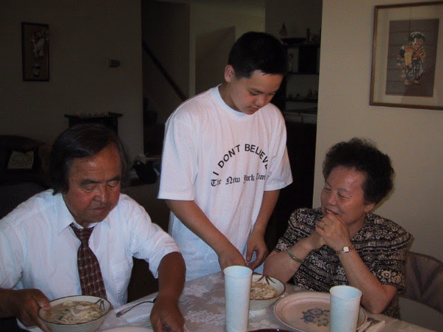

While driving to meet Sister K for lunch Tuned into a FM Station, a preset station, lower on the frequency spectrum.
Heard a voice, instead of music, on that classical FM station.
The voice had characteristics not often heard in these parts Yet the message was familiar and soothing. The voice sounded like someone from the Eastern United States was speaking
The speaker was Rabbi Ari Berman of Yeshiva University.
Speaking at a BYU Forum Assembly.
The topic was Covenant versus Consumer Education.
He described the difference between the two.
…the consumer focuses on the I and what’s missing from life creating a mechanism for fundamental unhappiness
while the covenant is focused on the we guiding one to contemplate their lives in a broader sense of memory and purpose in the service of others
He touched on the mission of YU.
the covenantal perspective is predicated on the notion that everyone has a place within the covenants and our educational mission is to help our students discover their own story and experience within our larger one
He also quoted Joseph B. Soloveitchik
one trait which I do possess is my inability to imitate anyone else I always want to be myself and to display my unique dignity of having been created in the image of God the glory of the individual is exemplified by the Singularity of every human being
He also spoke of his father’s passing 10 weeks before.
His father “…was a man with great force and great spirit it was hard to see him (decline) over these past couple years”
They were memorializing the eternal resting place in Israel
Rabbi Berman states,
I knew that this did not truly capture my reality because my father does not rest in the ground he Rest In My Heart and I carry him with me Wherever I Go
He further states,
we will Faithfully continue to transmit the terms of the Covenant to our children and grandchildren spreading God’s word and infusing the world with God’s spirit
Grateful for that message delivered in January this year. I needed to hear this personalized message.
Thank you Rabbi Berman,
Thank you KBYU-FM and BYU for hosting the program. Also grateful for the technology that provides both audio/vido and a trascription service.
Thank you mom and dad.
For teaching us how to live and serve.
